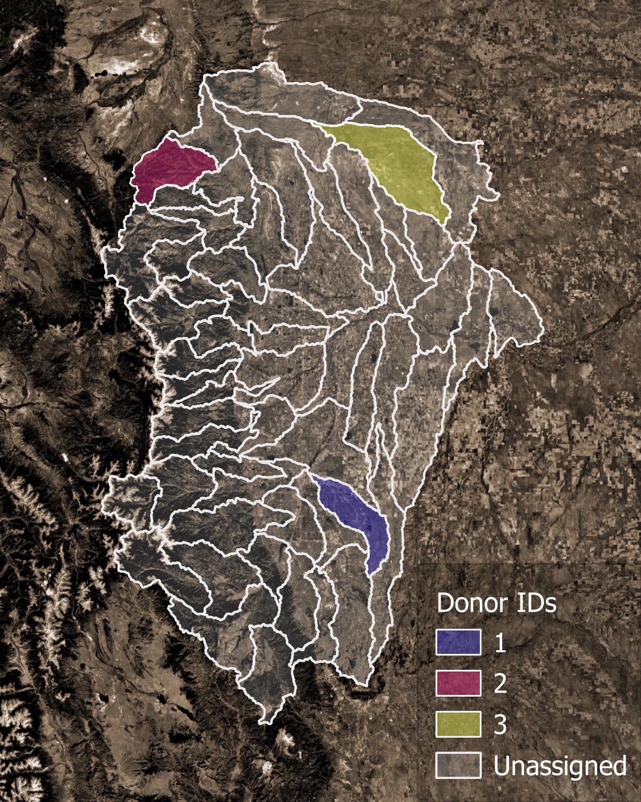

Parameter Regionalization#
The parameter regionalization process assigns pairs of divides as donors and receivers. Donor divides are calibrated divides. Receiver divides are uncalibrated divides that will have parameters assigned to them from their donor. Donor receiver pairings are assigned based on the proximity of divides in both spatial and physiographic parameter space. Several methods are provided for pairing including clustering methods, distance methods, and spatial proximity methods.
Required input: Divide attribute dataset
Process#
{kind=link}

Figure 1. Example of donor catchments (colors) and receiver catchments (translucent).#
Parameter regionalization begins with data validation. The attribute and spatial distance datasets are checked to make sure that all donors and receivers in each VPU are present. The percent nan values in the attribute dataset are recorded.
Attributes are split into main and base attributes. Main attributes are used for pairing receivers and donors.
For each combination of pairer and formulation:
Split receivers into cohorts with the same non-nan attributes. For example, cohort 1 uses
ngen_mp,ngen_slope_1km, andhlr_PETbut cohort 2 only usesngen_slope_1kmandhlr_PETbecause all of the receivers in cohort 2 are missing values forngen_mp. Similarly, a cohort is made for snowy receivers, but notably, only snowy donors are considered as potential donors.For each cohort:
Remove from consideration any donors above
nDonorMax, removing the furthest donors first (map distance).Standardize attribute values (0 mean, unit variance), and remove attribute correlations with a Principal Component Analysis (PCA).
Apply clustering routine (see method specifics below) to assign a donor to each receiver.
For any remaining unpaired receivers, assign nearest donor by map distance.

Figure 1. Example of final pairings. Each receiver catchment is assigned a donor catchment.#
Pairing Methods#
proximity This method selects the nearest donor (by map distance) to each receiver.
gower This method calculates the Gower’s distance to each donor from each receiver. The weight terms is set as the percent variance explained by each Principal component. The donor with the lowest Gower’s distance to each receiver is assigned to that receiver.
urf This method builds an unsupervised random forest from the training data. The similarity/dissimilarity values between each receiver and donor are used to assign donors.
kmeans This pairing method clusters the training data using the kmeans clustering algorithm. After clustering, receivers with one donor in their cluster select that donor. Receivers with no donors in their cluster, select their nearest donor (by map distance). Clusters with more than one donor in them are sub-clustered, and the process is repeated.
kmedoids This pairing method clusters the training data using the kmedoids clustering algorithm. Once clustering is complete, it proceeds with the same approach as kmeans.
hdbscan This pairing method clusters the training data using the hdbscan clustering algorithm. Once clustering is complete, it proceeds with the same approach as kmeans.
birch This pairing method clusters the training data using the BIRCH clustering algorithm. Once clustering is complete, it proceeds with the same approach as kmeans.